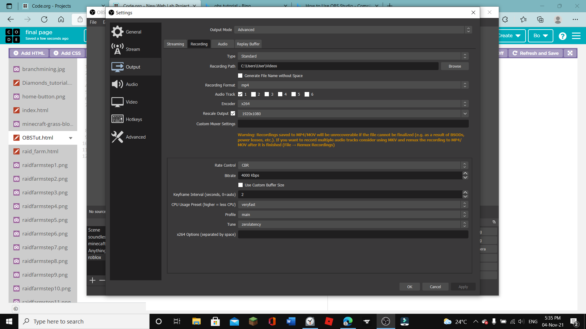
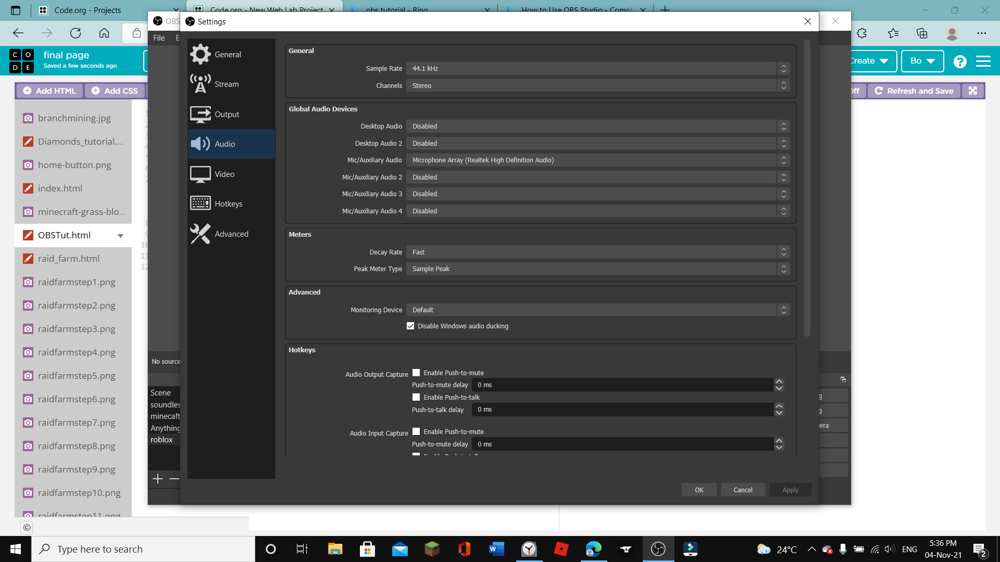
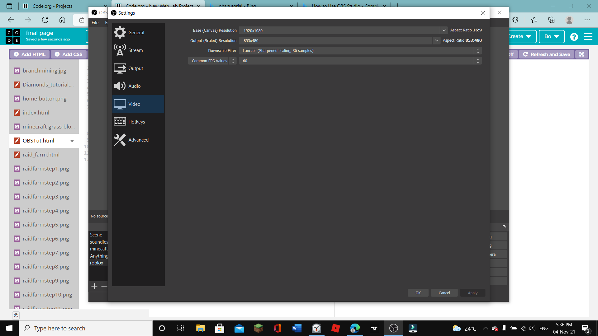

check the link for an obs tutorial here
credit:Primal video
or, you can view MY tutorial here
ok, first you haev to create a "scene". once you are done, add different "sources" for your video.
here are the settings i use.remember to switch your settings to "Advanced."
  